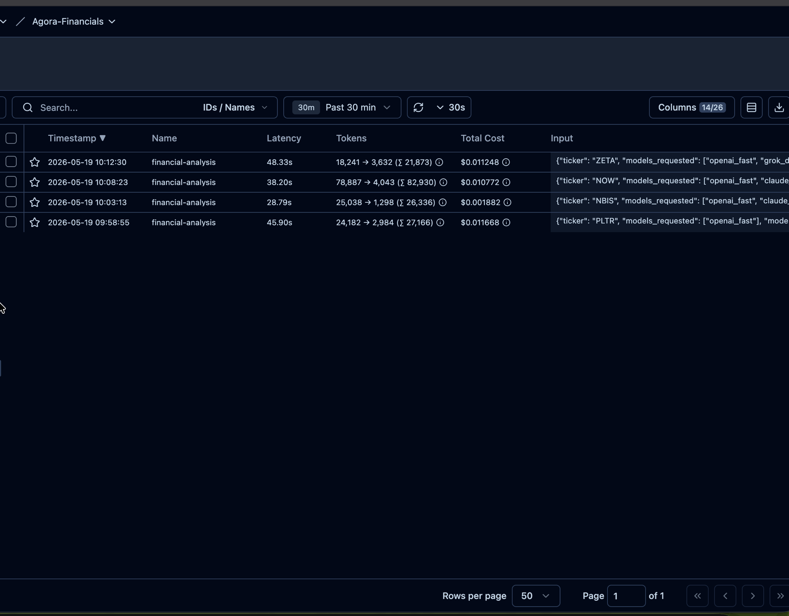

The Problem
Understanding whether a company is actually financially healthy is gated by time and expertise.
A single 10-Q filing is dozens of pages of dense numbers and legalese; reading enough of them to form an opinion takes hours and assumes you already know what to look for. The easy shortcut — asking one LLM — trades one slow process for one biased opinion. Models hallucinate numbers, cherry-pick data points, and bias their own conclusions. You can't tell which it's doing.
Agora Financials makes nine LLMs across five providers analyze the same filings in parallel, then forces them to debate the metrics they disagree on. Consensus from disagreement instead of a single opinion you can't verify.
System Design
One FastAPI service, four phases: ingest → analyze → harmonize → debate. Each phase is its own endpoint and runs to completion before the next starts — the frontend orchestrates the chain, holds intermediate state, and renders progress per phase so the user sees the pipeline live.
Nine models run in parallel via asyncio.gather, all routed through OpenRouter for unified billing, with direct-provider fallback when OpenRouter degrades. pgvector holds the SEC filing embeddings in the same Postgres that holds app data — one database, not two.
Four design choices worth discussing
OpenRouter as the unified gateway, with direct-provider fallback. Five providers (xAI, OpenAI, Anthropic, Google, Mistral) behind one API key, one billing dashboard, one cost-reporting format. Each model call routes through OpenRouter first; if it fails or stalls, the same call retries directly against the provider's native endpoint. The cost is one extra network hop on the happy path; the gain is being able to add or swap a model via env var instead of an integration.
Two-tier model split — fast vs. deep, not cheap vs. expensive. The fast tier (four models, 3–8s, ~$0.05 per metric) gets the pre-formatted financial tables only. The deep tier (five models, 21–52s, ~$0.12–0.25 per metric) gets the same tables plus a retrieval tool over pgvector for qualitative context from MD&A and segment notes. The discovery worth stating: the quality jump is fast→deep, not deep→premium. Cheap models often skip the retrieval tool entirely no matter how the prompt asks them not to, so paying for "premium fast" loses to plain "deep."
Multi-round debate with sliding-window history compression. When models disagree on a metric, the debate orchestrator runs N rounds in parallel: each model defends, reviews others' arguments, and can ACCEPT / CHANGE / REJECT. Position changes are tracked structurally ("Claude: Good → Neutral"). The non-obvious part: debate history grows fast. A naive implementation pastes every prior response into every next prompt and token costs balloon — R5 was ~5× R2 in early tests. The fix is a sliding window: keep the last two rounds verbatim, summarize everything older into a compact table via one cheap mistral_fast call. R5 flattens to roughly R2 cost.
Three-layer caching, because every step in the pipeline costs money. Each expensive operation has a cache key in front of it.
SEC filings → chunks, keyed by (ticker, year, quarter) — re-ingesting a filing that's already in the chunks table skips the SEC download, the boilerplate filtering, the chunking, and the embedding API call.
Structured financial tables, keyed by (ticker, latest_filing_date) in a separate financial_statements table — the analysis route reads from here only, never re-hits SEC at request time.
LLM evaluations, keyed by (ticker, llm_model, latest_filing_date) in llm_financial_analysis — the full structured response stored as JSONB. At request time, the code splits the requested models into "already cached" and "needs to run" and only fires LLM calls for the latter. The same ticker re-evaluated against the same filing costs nothing in API spend.
INGEST ANALYZE HARMONIZE DEBATE
────── ─────── ───────── ──────
SEC EDGAR
(10-Q via 9 LLMs · 5 providers aligned parallel rounds
edgartools) ─► via OpenRouter ─► majority ─► ACCEPT / CHANGE
│ wins / REJECT
▼ ┌── fast tier (4) ──┐ flagged
chunk · embed │ numbers only │ for debate sliding-window
(3-small, 1536d) │ 3-8s, ~$0.05 │ compression
│ └───────────────────┘ │
▼ ┌── deep tier (5) ──┐ ▼
pgvector │ + RAG over │ consensus
(PostgreSQL) │ pgvector │ or "COMPLEX"
│ 21-52s, ~$0.12 │ │
yfinance fallback └───────────────────┘ ▼
for non-US tickers PDF report
─────────── Langfuse traces · latency · tokens · cost · errors ───────────
(today: ANALYZE only)
Polished diagram coming — this ASCII is a stand-in.
Evaluation
Observability is wired today on the heaviest route — the multi-LLM analysis — and the deeper evaluation layers (LLM-as-judge for structured output, tool use, debate consistency) are the next thing on the roadmap. The plan is to build them on the same Langfuse foundation that's already in place.
What's wired today — Langfuse on the analysis route
Every analysis request opens a Langfuse trace named financial-analysis. LangChain's CallbackHandler auto-captures each model call as a child span, with token counts and cost lifted from OpenRouter's response (the extra_body={"usage": {"include": True}} flag is on, so per-call cost is visible per provider). The trace_id is returned in the API response, ready for user-feedback scores to be attached later.
What that buys today: latency, token usage, cost, and errors per request, per model, queryable in one place.

Live Langfuse view — one trace per analysis, four recent requests across tickers ZETA, NOW, NBIS, PLTR.
Where it's going — three LLM-as-judge layers, on the same trace data
Each one builds on traces Langfuse is already collecting, so the work is judge prompts and Langfuse UI configuration, not new instrumentation. The three planned judges:
- Structured-output schema compliance — does every model return the expected shape? Eight metrics, each with rating + reason + confidence. Catches schema drift across model upgrades.
- Tool-use behavior — deep-tier models should hit the retrieval tool. The Gemini-Flash incident showed this can also fail in the other direction (a model calling the tool 78% of the time and never stopping). A judge that scores tool-call counts and patterns flags both failure modes systematically.
- Debate consistency — position changes are already tracked structurally ("Claude: Good → Neutral"). The judge scores whether the new reasoning actually engages the counter-argument or just restates an opinion. Catches the case where models flip without justification.